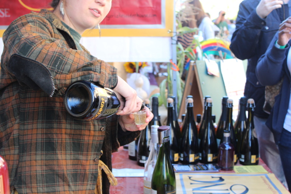

"The Downtown Ithaca Alliance is pleased to announce the 35th Annual Apple Harvest Festival Presented by Tompkins Trust Company. Last year was such a wonderful success, we are looking forward to working with you all again this year." (Taken from the Ithaca Apple Harvest Festival 2017 website downtownithaca.com)
With over 50 sellers, the Annual Ithaca Apple Harvest Festival is one of the city's most anticipated event of the year. Attractng visitors from all over the state, families and individuals alike can enjoy a wide range of carnival foods, apples, cider, crafts, and many more. There is something for everyone at Apple Fest!
Dates and Times:
Friday, September 29 from 12pm - 6pm
Saturday, September 30 from 10am - 6pm
Sunday, October 1 from 10am - 6pm
